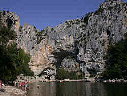

Pont d'Arc
Useful Information
|  |
| Image: view of the natural bridge. |
| Location: | Near Vallon Pont d'Arc. |
| Classification: |
 Natural bridge Natural bridge |
| Dimension: | |
| Photography: | |
| Accessibility: | |
| Bibliography: | |
| Address: |
Office de Tourisme, le Village, Vallon Pont d'Arc, Tel: +33-4.75.88.04.01, Fax: +33-4.75.88.41.09,
E-mail: |
| As far as we know this information was accurate when it was published (see years in brackets), but may have changed since then. Please check rates and details directly with the companies in question if you need more recent info. |
|
| Last update: | $Date: 2015/11/20 13:17:58 $ |
History
Description
 |
| Image: view from the West. |
 |
| Image: view from the East. |
This is one of the most famous natural bridges of the world. Located in the middle of a popular recreational area it is well known, a landmark used for orientation and as a meeting point. Here, at the upper end of the Ardeche gorge, is a campground and the starting point of the boat trips through the valley. The nearby village Vallon was named after the natural bridge, and other things too. There are restaurants, hotels, and camping grounds named Pont d'arc.
The genesis of this natural bridge is rather easy to understand. Originally the plain was drained by a subterranean river in a cave system, right where now the arc is. The cave became bigger and bigger, and because of the close surface the roof collapsed. Most parts of the cave soon formed huge dolines, then poljes with steep walls. The walls were softened by weathering and soon the former cave looked like a nice valley. Only one short part of the cave is still there, the arc itself. It stayed, most likely because the limestone here is a bit harder and thus resists weathering better than the limestone around.
 |
| Pont d'Arc Gallery |
 Search Google for "Pont d'Arc"
Search Google for "Pont d'Arc" Google Earth Placemark
Google Earth Placemark Base Nautique du Pont d'Arc
a tour operator offering boat trips into the gorge.
Base Nautique du Pont d'Arc
a tour operator offering boat trips into the gorge.